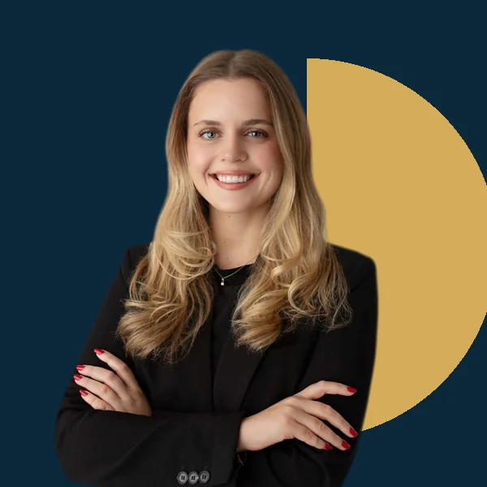

Prévention.

Clarifier les priorités et renforcer les pratiques avant que les enjeux deviennent des urgences.
Un réseau d’experts de confiance et une communauté de pairs, réservés aux clients de nos collaborateurs.



Chaque point est un expert du réseau. Survolez-le pour le découvrir, cliquez pour voir son profil.
Un enjeu RH devient financier, puis médiatique. Le Centre réunit les bonnes expertises, au moment où vous en avez besoin.
Le continuum PUR : trois moments qui s’emboîtent, un même réseau.

Clarifier les priorités et renforcer les pratiques avant que les enjeux deviennent des urgences.

Mobiliser rapidement les bonnes expertises quand la situation déborde.

Rétablir la confiance, consolider les équipes et préparer la suite.
experts collaborateurs, choisis pour leur façon de travailler
domaines d’expertise qui se parlent entre eux
seule prise de contact pour tout mettre en mouvement
Près de 70 organisations accompagnées par l’équipe fondatrice en deux ans. Le Centre met ce réseau à votre portée.
Subir l’imprévu coûte cher. Savoir qui appeler change tout.
Moins de dossiers en suspens, plus de choix assumés et suivis.
Un climat plus sain, moins d’épuisement, une culture durable.
Des pratiques solides en finances, conformité et gouvernance.
Des pairs et des experts de confiance, à portée de main.
Des cercles de dirigeants, sur invitation, où la parole reste dans la salle.
Découvrir → Ressources
RessourcesRéflexions, outils, diagnostics et l’infolettre ENTRE NOUS.
Explorer →AgendaConférences, formations et activités du Centre et de ses experts.
Voir l’agenda →Le Centre des dirigeants est un réseau de collaborateurs experts et une communauté de pairs, lancé en novembre 2026 à Gatineau par France Bélisle et Nicolas Roy, qui accompagne les dirigeants d’entreprises et d’organisations à partir d’une seule prise de contact.
Le Centre des dirigeants est un réseau de collaborateurs experts basé à Gatineau. Il accompagne les dirigeants d’entreprises et d’organisations en stratégie, finances, ressources humaines, communications de crise, médiation, santé mentale au travail, protection des données et intelligence artificielle, à partir d’une seule prise de contact.
Non. C’est précisément le rôle du Centre. Vous décrivez la situation dans vos mots et la coordination du Centre vous oriente vers le ou les experts pertinents.
PUR signifie Prévention, Urgence, Reconstruction. Le Centre intervient avant une difficulté pour l’anticiper, pendant une crise pour mobiliser rapidement les bonnes expertises, et après pour rétablir le dialogue et préparer la suite.
Non. L’accompagnement peut être ponctuel ou s’inscrire dans la durée, selon les besoins de l’organisation.
Le Centre est réservé aux clients de nos collaborateurs. Présentez-vous en quelques lignes : la coordination vous répond en 24 heures ouvrables.